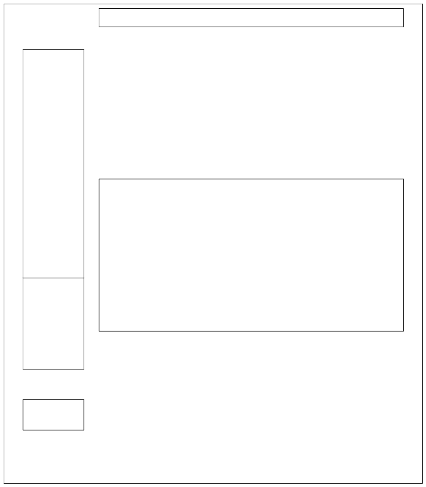

Cartopy and Map Layout
Cartopy and Map Layout
So I was browsing an excellent blog, and came across this post http://grindgis.com/blog/checklist-map-design-layout. The author discusses the various components you expect on a paper map (apart from just the spatial content), and proposes a number of layouts.
Now obviously, the article was intended mainly for users with a full-powered GIS. However a full-function GIS, even the freely available QGIS, is pretty large beast, and the learning curve to master it, and accomodate it into a workflow would be steep (or, at least, it has been for me, even given the comprehensive tutorial material available).
So I thought to myself, how would I implement one of the recommended layouts in Matplotlib and Cartopy. This post is the result.
Axes are your friend(s)
Excuses in advance to Matplotlib experts who read this, as I have probably got some of the key concepts askew (but
that's all part of the learning).
The main concept behind my solution is the concept that a figure can contain a number of Axes objects that co-exist.
Each Axes object can be commanded to turn on or off the 'decorations' that surround the plotting content.
So the first thing is to define a function that will clear away all the decorations, leaving us with the equivalent of a blank space on the paper.
def blank_axes(ax):
"""
blank_axes: blank the extraneous spines and tick marks for an axes
Input:
ax: a matplotlib Axes object
Output: None
"""
ax.spines['right'].set_visible(False)
ax.spines['top'].set_visible(False)
ax.spines['bottom'].set_visible(False)
ax.spines['left'].set_visible(False)
ax.yaxis.set_ticks_position('none')
ax.xaxis.set_ticks_position('none')
ax.tick_params(labelbottom='off', labeltop='off', labelleft='off', labelright='off' ,\
bottom='off', top='off', left='off', right='off' )
#end blank_axes
The term spine is a little misleading (you or I have only one spine, but an Axes has four: top, bottom, left, right). On
a spine there are tick marks, and labels for those tick marks. We clear them all away.
Draw the outer frame
fig = plt.figure(figsize=(10,12))
# ------------------------------- Surrounding frame ------------------------------
# set up frame full height, full width of figure, this must be called first
left = -0.05
bottom = -0.05
width = 1.1
height = 1.05
rect = [left,bottom,width,height]
ax3 = plt.axes(rect)
# turn on the spines we want, ie just the surrounding frame
blank_axes(ax3)
ax3.spines['right'].set_visible(True)
ax3.spines['top'].set_visible(True)
ax3.spines['bottom'].set_visible(True)
ax3.spines['left'].set_visible(True)
ax3.text(0.01,0.01,'© Don Cameron, 2017: net-analysis.com. '+
'Map generated at '+datetime.datetime.now().strftime("%Y-%m-%d %H:%M:%S") + ' from ' +theNotebook, fontsize=8)
This outer frame is a little big larger than the usual square of side one, so the surround box doesn't touch any interior component. We set the enclosing spines visible, but supress tick marks, etc. Note that I have included a Copyright text, and some information to support reproducibility (the classic small print at the bottom of the document). I get the Jupyter Notebook name by some JavaScript hackery I got from Stack Exchange, but this could be a Python Module name, or anything you like.
Draw the spatial data
# --------------------------------- Main Map -------------------------------------
#
# set up main map almost full height (allow room for title), right 80% of figure
left = 0.2
bottom = 0
width = 0.8
height = 0.90
rect = [left,bottom,width,height]
ax = plt.axes(rect, projection=ccrs.PlateCarree(), )
ax.set_extent((150, 155, -30, -23))
ax.coastlines(resolution='10m', zorder=2)
#land polygons, including major islands, use cartopy default color
ax.add_feature(LAND_10m)
ax.add_feature(RIVERS_10m)
ax.add_feature(BORDERS2_10m, edgecolor='grey')
ax.stock_img()
# stock image is good enough for example, but OCEAN_10m could be used, but very slow
# ax.add_feature(OCEAN_10m)
ax.gridlines(draw_labels=True, xlocs=[150, 152, 154, 155])
I have allocated about 80% of the width of the map to the Cartopy spatial representation. The height is set to 90%, to allow a title at the top.
Because I want a high quality map, I have defined features using the Natural Earth 1:10Million scale data, as follows:
BORDERS2_10m = cartopy.feature.NaturalEarthFeature('cultural', 'admin_1_states_provinces',
'10m', edgecolor='black', facecolor='none')
#"""country boundaries.""""
This gives us our state borders. We have facecolor='none', because we only want a border, not each state shaded.
LAND_10m = cartopy.feature.NaturalEarthFeature('physical', 'land', '10m',
edgecolor='face',
facecolor=cartopy.feature.COLORS['land'])
#"""land polygons, including major islands."""
Note that Cartopy defines a set of colors for land, sea, etc., which I am re-using.
RIVERS_10m = cartopy.feature.NaturalEarthFeature('physical', 'rivers_lake_centerlines', '10m',
edgecolor=cartopy.feature.COLORS['water'],
facecolor='none')
#"""single-line drainages, including lake centerlines."""
Note that by default, Cartopy draws its tick labels outside the main map, so we have to adjust the surrounding Axes objects so they don't overlap them.
Scale Bar
Now come the hacky-est part of this post. Basemap has a nifty method to draw scale bars (drawmapscale()), but so far as I
know, Cartopy has no such method. Maybe this is because Cartopy is oriented towards those who want to display
quantitive or qualitative data in a spatial context, and they don't expect people to use their maps to measure
distance. However, in my view, a scale bar is part of the spatial data that should be displayed. Just how big are those
Texas county borders that we keep seeing in examples, color-coded for poverty, or some such sociological attribute?
The double-sad part is that I know on no easy way to draw a scale bar in one Axes object, that will exactly match the distance measurements on the main map. Maybe if I define a second Cartopy Axes, with lat/lon range adjusted for the different sizes of the Axes objects ... but that is a matter for more investigation.
What all this means is that I can't follow the original blog post that prompted this post, which suggested the scale bar as a separate object, off to the side. I am going to have to write it on the main map. Not too bad a compromise.
Define the scale bar parameters
lon0, lon1, lat0, lat1 = ax.get_extent()
# bar offset is how far from bottom left corner scale bar is (x,y) and how far up is scale bar text
bar_offset = [0.05, 0.05, 0.07]
bar_lon0 = lon0 + (lon1-lon0)*bar_offset[0]
bar_lat0 = lat0 + (lat1-lat0)*bar_offset[1]
text_lon0 = bar_lon0
text_lat0 = lat0 + (lat1-lat0)*bar_offset[2]
bar_tickmark = 20000 # metres
bar_ticks = 5
bar_alpha = 0.3
bar_color = ['black', 'red']
My scale bar will be 5% up, 5% right from the lower left corner; made up of 5 sub-bars each 20 km long, alternating red and black, and quite transparent (in case they hide something important; alpha=0.3). The text will be up 7%, above the bar.
Draw the Scale Bar
# draw a scale bar that is a set of colored line segments (bar_ticks of these), bar_tickmarks long
for i in range(bar_ticks):
# 90 degrees = direction of horizontal scale bar
end_lat, end_lon = displace(bar_lat0, bar_lon0, 90, bar_tickmark)
# capstyle must be set so line segments end square
#TODO make transform match ax projection
ax.plot([bar_lon0, end_lon], [bar_lat0, end_lat], color=bar_color[i%2], linewidth=20,
transform=ccrs.PlateCarree(), solid_capstyle='butt', alpha = bar_alpha)
# start of next bar is end of last bar
bar_lon0 = end_lon
bar_lat0 = end_lat
#end for
I have a helper function displace() that takes:
-
a lat/lon (in degrees - no love for radians here!)
-
a direction (degrees)
-
a distance in metres
and returns the lat/lon at the end of that distance in that direction. I draw a set of lines (NOT bars), but as a result, I have to set the appearence of the line segment end as 'butt', or else the line will be drawn with rounded ends that go past the point I want them to stop or start at.
Draw the scale bar text
# highlight text with white background
buffer = [patheffects.withStroke(linewidth=3, foreground="w")]
# Plot the scalebar label
units = 'km'
#TODO make transform match ax projection
t0 = ax.text(text_lon0, text_lat0, str(bar_ticks*bar_tickmark/1000) + ' ' + units, transform=ccrs.PlateCarree(),
horizontalalignment='left', verticalalignment='bottom',
path_effects=buffer, zorder=2)
We put a white background behind the black scale bar text.
Locating Map
# ---------------------------------Locating Map ------------------------
#
# set up index map 20% height, left 16% of figure
left = 0
bottom = 0
width = 0.16
height = 0.2
rect = [left,bottom,width,height]
ax2 = plt.axes(rect, projection=ccrs.PlateCarree(), )
ax2.set_extent((110,160, -45, -10))
# ax2.set_global() will show the whole world as context
ax2.coastlines(resolution='110m', zorder=2)
ax2.add_feature(cfeature.LAND)
ax2.add_feature(cfeature.OCEAN)
ax2.gridlines()
lon0,lon1,lat0,lat1 = ax.get_extent()
box_x = [lon0, lon1, lon1, lon0, lon0]
box_y = [lat0, lat0, lat1, lat1, lat0]
plt.plot(box_x, box_y, color='red', transform=ccrs.Geodetic())
We reserve a small area at the bottom left for a locating map. In my example, I have drawn Australia (well, some far flung
islands like Christmas Island may be missing). A set_global() call will force the whole globe to be shown,
but that is zoomed too far back for my case. I add coastlines, and shade the land and oceans with the default
Cartopy resolution and colors. I draw gridlines, and then draw a red box that represents the main map bounds.
The Title
# -------------------------------- Title -----------------------------
# set up map title top 4% of figure, right 80% of figure
left = 0.2
bottom = 0.95
width = 0.8
height = 0.04
rect = [left,bottom,width,height]
ax6 = plt.axes(rect)
ax6.text(0.5, 0.0,'Multi-Axes Map Example', ha='center', fontsize=20)
blank_axes(ax6)
The title is centered above the map. I could use some ornate font, but just went with the Cartopy defaults. Note that no Cartopy projection systems are used, just the 0.0-1.0 default Axes object units. We turn off all spines, etc.
The North Arrow
# ---------------------------------North Arrow ----------------------------
#
left = 0
bottom = 0.2
width = 0.16
height = 0.2
rect = [left,bottom,width,height]
rect = [left,bottom,width,height]
ax4 = plt.axes(rect)
# need a font that support enough Unicode to draw up arrow. need space after Unicode to allow wide char to be drawm?
ax4.text(0.5, 0.0,u'\u25B2 \nN ', ha='center', fontsize=30, family='Arial', rotation = 0)
blank_axes(ax4)
The North arrow lives above the locating map. The only gotchas of note here are:
-
You need to specify a font family that support the Unicode character used (the default font doesn't, in my case). I am uncertain as to where Matplotlib / Cartopy gets its fonts from, so there may be scope for a more florid North arrow.
-
In my case, the Unicode needed a following space before the training newline character, to be drawn properly. Why, I don't know.
In my case, my map is NOT rotated, but the text( rotation= ) parameter would allow for a rotated arrow, if needed.
the Legend
The legend is bit hacky as well. A simple call to the Matplotlib 'make me a legend' usually fails because under the covers, the necessary calls haven't been made to link a drawing object (like a line with linestyle and linecolor), to a name. So we have to do all that.
The trick is to create some drawing entities (patches and lines), get the handles to these, associate them with names, and then create a legend. It's not all bad, it does give you the chance to control the legend in fine detail. Spoiler alert, GeoPandas legends can be quite painful.
Create the Axes Object
# ------------------------------------ Legend -------------------------------------
# legends can be quite long, so set near top of map (0.4 - bottom + 0.5 height = 0.9 - near top)
left = 0
bottom = 0.4
width = 0.16
height = 0.5
rect = [left,bottom,width,height]
rect = [left,bottom,width,height]
ax5 = plt.axes(rect)
blank_axes(ax5)
Create Area Legend Entries
# create an array of color patches and associated names for drawing in a legend
# colors are the predefined colors for cartopy features (only for example, Cartopy names are unusual)
colors = sorted(cartopy.feature.COLORS.keys())
# handles is a list of patch handles
handles = []
# names is the list of corresponding labels to appear in the legend
names = []
# for each cartopy defined color, draw a patch, append handle to list, and append color name to names list
for c in colors:
patch = mpatches.Patch(color=cfeature.COLORS[c], label=c)
handles.append(patch)
names.append(c)
#end for
Note that these Patches never appear in our diagram. Now Cartopy color names are not perfect, but it's only an example. If at some time Cartopy expend their color range, the code above should still work.
Create Line Legend Entries
# do some example lines with colors
river = mlines.Line2D([], [], color=cfeature.COLORS['water'], marker='',
markersize=15, label='river')
coast = mlines.Line2D([], [], color='black', marker='',
markersize=15, label='coast')
bdy = mlines.Line2D([], [], color='grey', marker='',
markersize=15, label='state boundary')
handles.append(river)
handles.append(coast)
handles.append(bdy)
names.append('river')
names.append('coast')
names.append('state boundary')
Note that here we have turned off all markers, and have invented our own labels to appear in the legend.
Create the Legend, and Display All!
# create legend
ax5.legend(handles, names)
ax5.set_title('Legend',loc='left')
plt.show()
It looks like by default, the legend() call turns the spines back on, but that is OK. We specify a legend title.
The Results
The end result of all this? See below.

In order to make sense of the different Axes objects, here they are again, with no content, and with the enclosing spines drawn. Some of these (like the main map) will expand as they are filled with content.

The Imports
Shown below are the imports for the Notebook from which this example was taken. Not all are used in the example fragments shown above.
# all imports should go here
import pandas as pd
import sys
import os
import subprocess
import datetime
import platform
import datetime
import math
import matplotlib.pyplot as plt
#import seaborn as sb
import cartopy
import cartopy.crs as ccrs
from cartopy.io.img_tiles import OSM
import cartopy.feature as cfeature
from cartopy.io import shapereader
from cartopy.io.img_tiles import StamenTerrain
from cartopy.io.img_tiles import GoogleTiles
from owslib.wmts import WebMapTileService
from matplotlib.path import Path
import matplotlib.patheffects as PathEffects
from matplotlib import patheffects
import matplotlib.patches as mpatches
import matplotlib.lines as mlines
import numpy as np